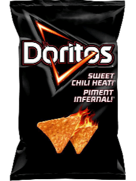
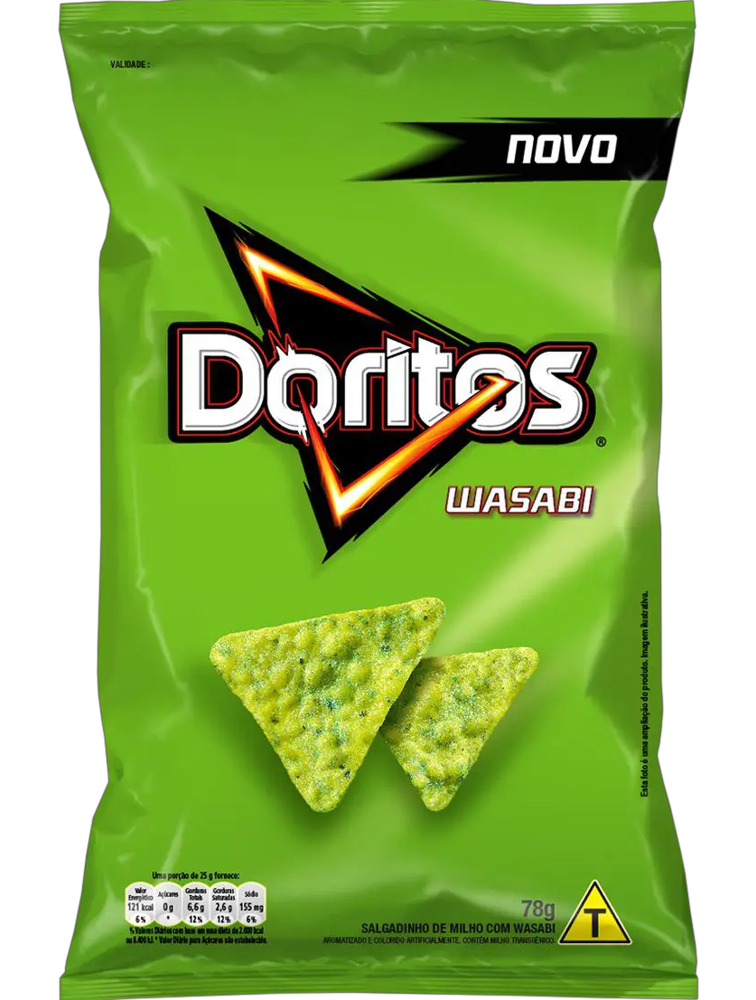

PRINCIPAIS SABORES
Não recomendamos o sabor de wasabi :/
O salgadinho triangular mais tradicional é o de queijo nacho. Crocante, saboroso, e queijo, simplesmente queijo...

À base de milho, como todos seus irmãos, mas sua picância é única e encantadora.
Baseado no famoso molho Cool Ranch, e perfeito para aqueles que desejam um sabor mais neutro!

Sabe aquela pasta verde e picante que acompanha sushi? Então, pensa nisso como sabor de Doritos @_@